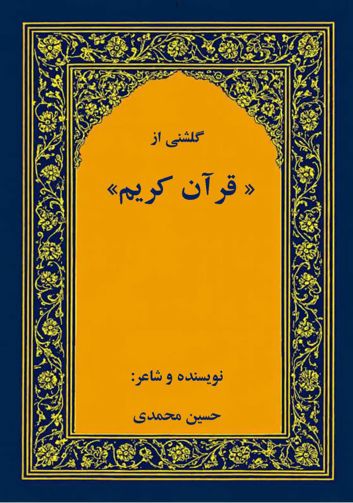

گلشنی از قرآن کریم
اثری با موضوعات ادبی و معنوی
نویسنده: حسین محمدی
📖 پیشگفتار
مقدم
در آستانهٔ همنوایی
این کتاب از تلاقی دو شیفتگی زاده شده است: شیفتگی به نغمهٔ بیکران کلام وحی، و دلبستگی به لطافت و شکوه زبان فارسی. «گلشنی از قرآن کریم» نه دعوی ترجمه دارد و نه داعیهٔ تفسیر؛ بلکه کوششی است شاعرانه برای همنشینی با آیات، و بازتاب جلوههایی از سورههای منتخب قرآن در آینهٔ شعر پارسی.
در این اثر، آیهها هم با زبان شرح، و هم با زبان احساس و تصویر سخن میگویند؛ در وزن و آهنگ مینشینند و با جانِ خواننده وارد گفتوگویی تازه میشوند. مقصود آن است که پلی زده شود میان دلِ فارسیزبان و پیام جهانشمول قرآن کریم؛ پلی از جنس خیال، موسیقی و معنا، تا مفاهیم بلند وحی با حسی نو لمسپذیر گردد و انسان با سرچشمهٔ زیباییها از نو جان بگیرد.
این نوشته ادای دینی است فروتنانه به دو میراث سترگ: قرآن کریم، کتاب هدایت جانها؛ و شعر فارسی، زبان رازهای دل. امید آنکه این «گلشن» هرچند برگرفته از باغی بیکران است، بتواند روزنی بگشاید به سوی عطر معنا، و خواننده را به تأملی آرام و دلانگیز در آستانهٔ کلام الهی فراخواند.
حسین محمدی
آذر ماه سال هزار و چهارصد و چهار